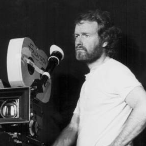
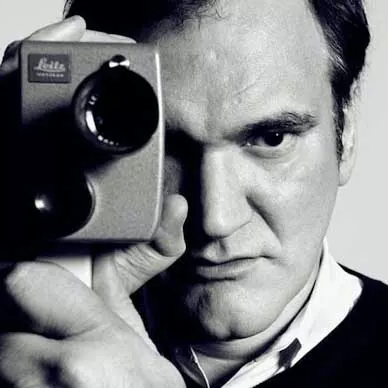
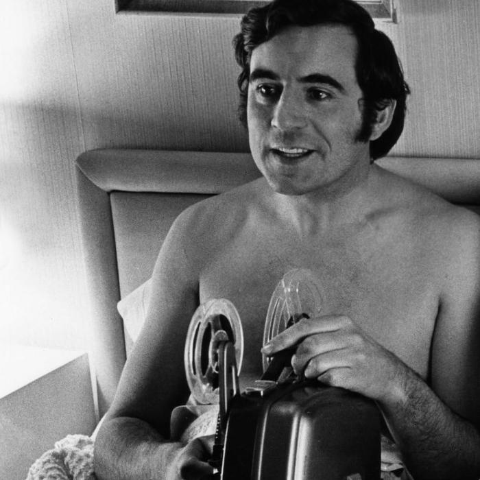

Terry Jones
Life of Brian · And Now for Something Completely Different


Directors whose work I keep coming back to see more of. Just a list of favourites — nothing more scientific than that.



Life of Brian · And Now for Something Completely Different